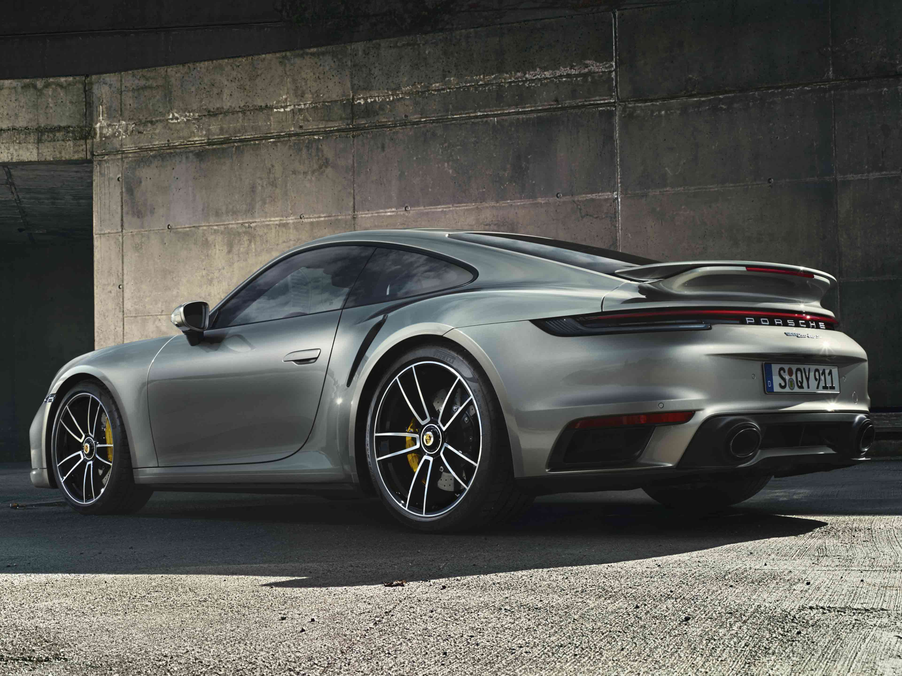
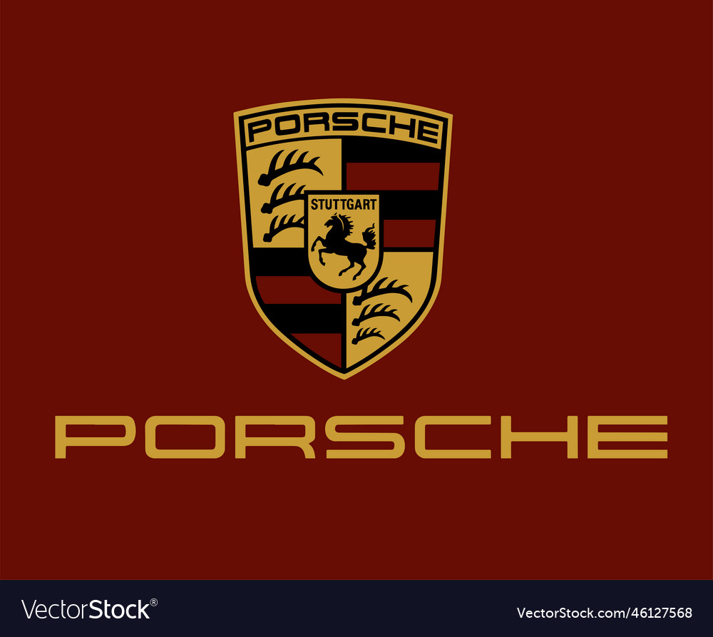
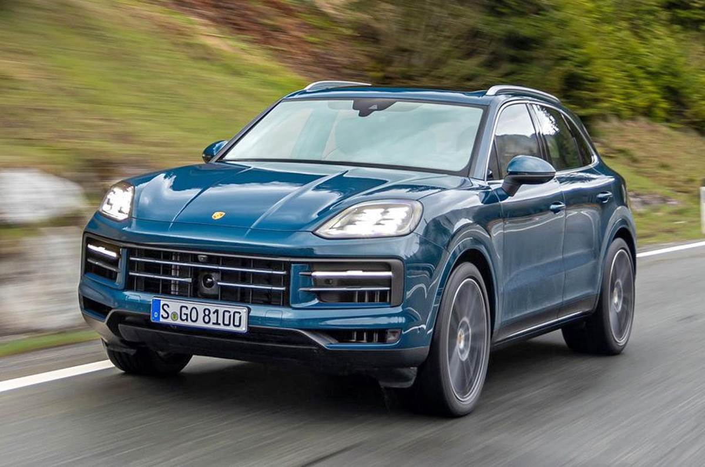
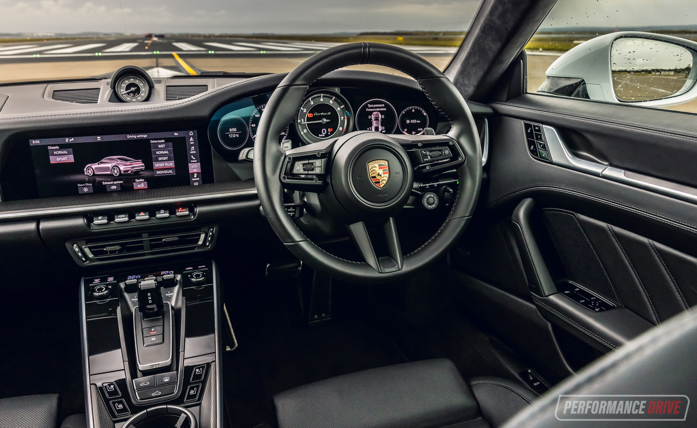
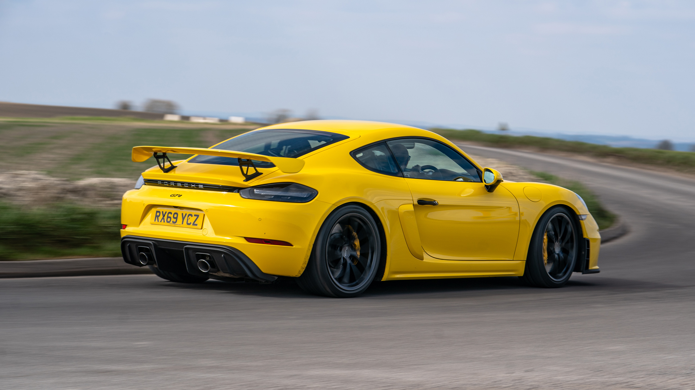
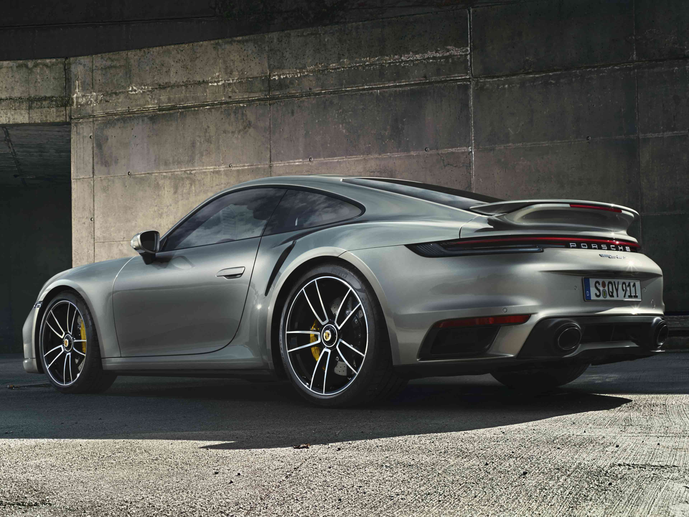
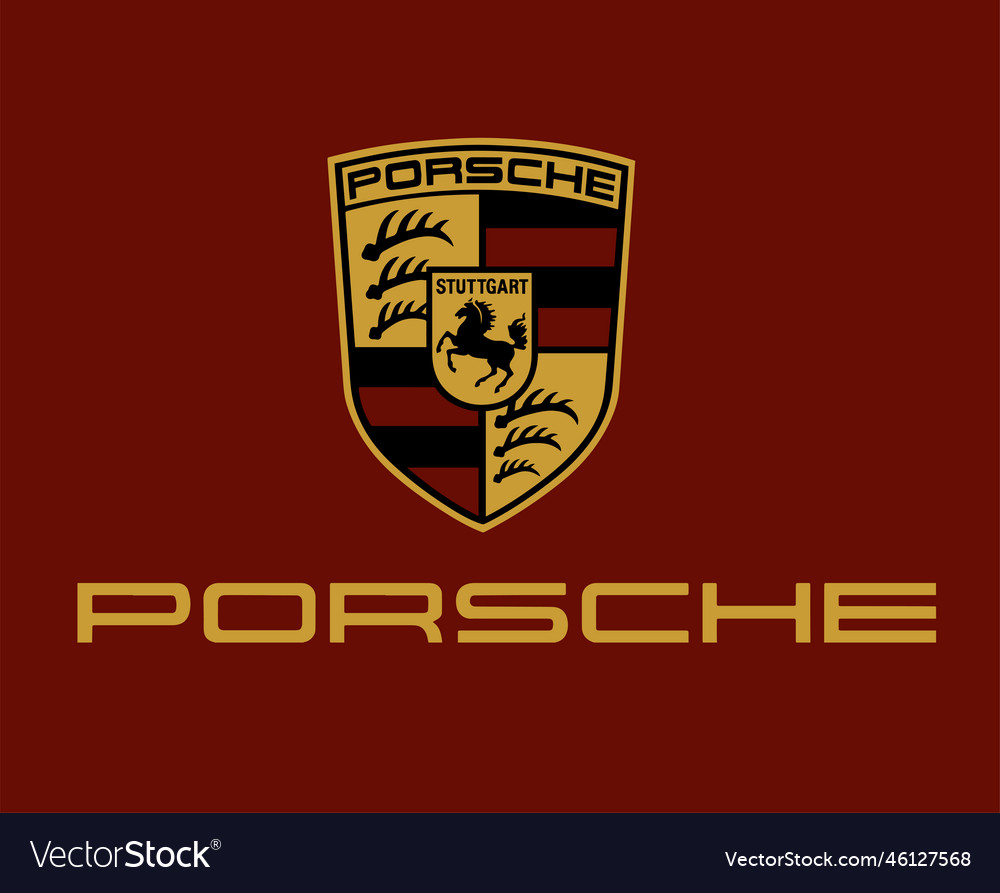
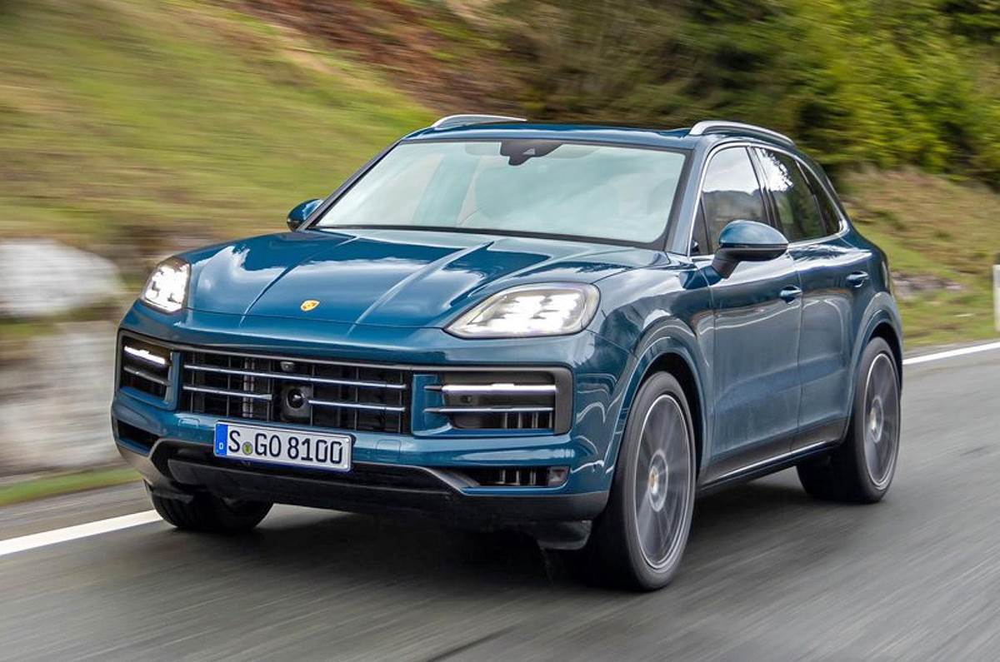
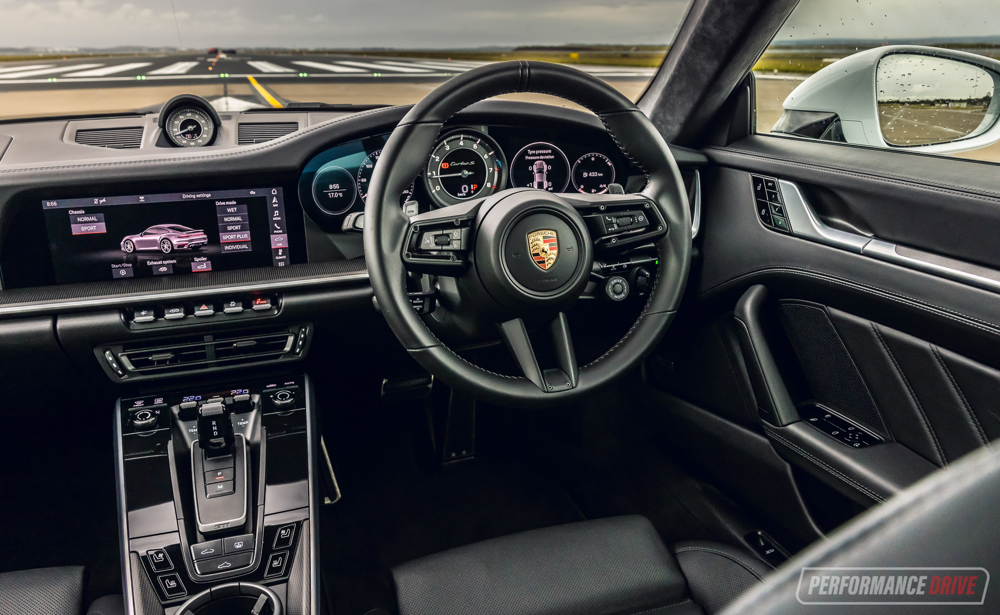
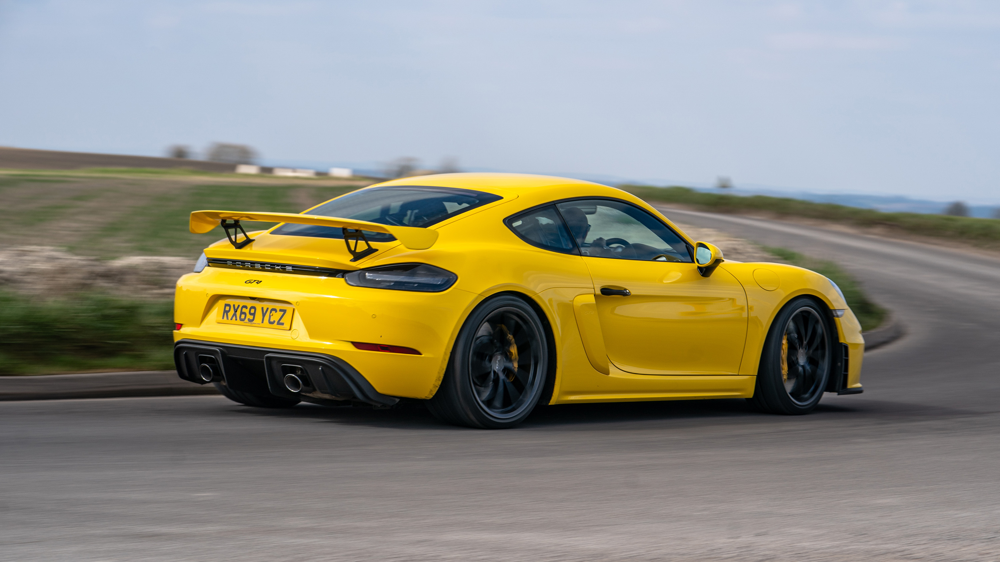

| MODEL | PRICE | TORQUE | MILLEGE |
|---|---|---|---|
| 911 | 1.36 cr | 465nm | 5 |
| Panemera | 1.4cr | 400nm | 7 |
| 718 | 1.5 cr | 485nm | 3 |
Porsche's are the greatest production sports car in the world, Because of their manufacturing and production methods, High performance and sleek design. The first thing that makes these cars great is the manufacturing methods used in creating such a spectacular automobile. All Porsche's are manufatured in Germany in the Porsche plant. They are not built on an assembly line like most cars are produced, they are built by hand from start to finish. Some of the finest automobile engineers in the world can be found at Porsche. It may take months to produce a single car, being produced by hand. Using materials such as carbon fiber, aluminum and fiberglass reduce the weight of the car, and these materials are more strong than convetional metals like steel and sheet metel. Painting of the body is more complex than expected. Porsche uses custom colors such as "Porsche Red". After a body is painted it is then put into I hude oven to bake the paint on to keep from chipping easily or bubbling. After production its off to the test track. This brings us to the performance of a Porsche. The high performance of a Porsche is not even compairable to that of its competitors. Porsche has proven this in the race of the 24 hours of LeMans, Cars must be able to endure the long hours and be able to keep up with the others in their class. Porsche cars have won this race more than any other manufacturer in the world. The 2000 911 Turbo is a fine example of Porsche performance, With its turbo charged 6 cylinder engine that produces 420 horse power mounted in the rear of the chassis, this car hits a top speed of 189 mph. Also, a suprising fact about this car is that it is 4 wheel drive, giving it superior road gripping traction and handling. All in all this is a very high performance machine for the driver that wants a ton of horse power and high speeds.